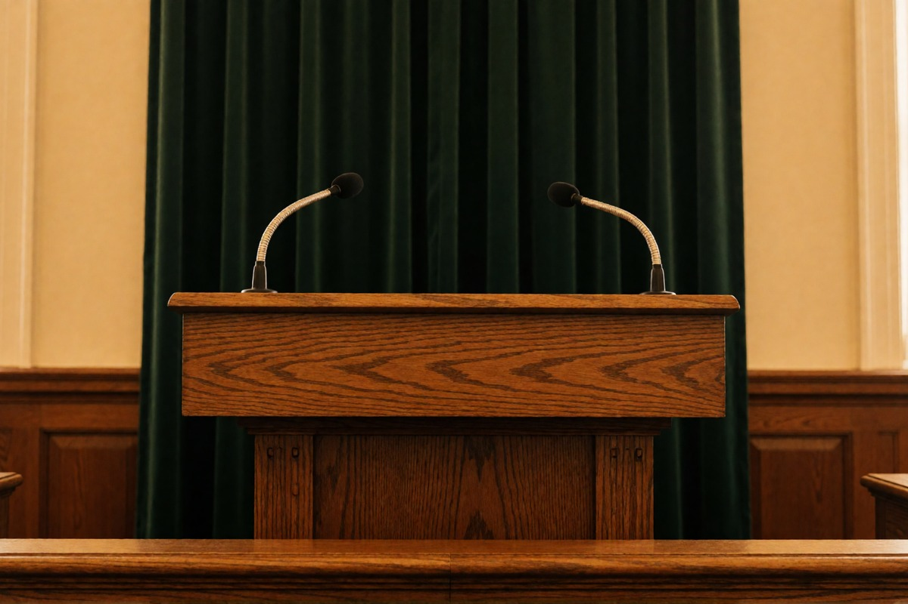

Cronaca · 24 novembre 2026
Nordio: nessuna ispezione sul procuratore di Caltanissetta

Il ministro della Giustizia esclude verifiche sul magistrato che indagava su Gianni De Gennaro: «la magistratura è autonoma e sovrana». E torna sul processo mediatico, annunciando una legge allo studio in Parlamento a tutela dei terzi.
di Franco Zanghì
Il ministro della Giustizia, Carlo Nordio, esclude un'ispezione sul procuratore di Caltanissetta, Salvatore De Luca, il magistrato che indagava su Gianni De Gennaro. Lo ha detto a Roma martedì 24 novembre 2026, a margine della presentazione del calendario della polizia penitenziaria, e lo riporta l'ANSA.
Nei giorni scorsi De Luca aveva rilasciato un'intervista sull'indagine per i presunti depistaggi nelle inchieste sulla strage di via D'Amelio, e si era parlato dell'ipotesi di un'istruttoria disciplinare nei suoi confronti, attivabile attraverso la Procura generale della Cassazione.
Le parole del ministro
«Non abbiamo mai preso in considerazione l'idea di un'ispezione per quanto riguarda il merito di un'inchiesta», ha detto Nordio. «Questo è inammissibile perché la magistratura è autonoma e sovrana e quindi non prendiamo nessuna iniziativa».
Sulla morte di De Gennaro il ministro ha scelto una riga sola: «Di fronte ad eventi come il suicidio c'è soltanto il silenzio, il rispetto e una preghiera».
Il processo mediatico e la legge allo studio
Nordio è poi tornato su un tema che porta avanti da anni, quello della diffusione di notizie anche riservate durante le indagini. Un corto circuito, ha detto, che ha fatto male a tante persone, indipendentemente da questo caso.
In Parlamento, ha ricordato, è allo studio una legge che tuteli i terzi, e soprattutto chi è estraneo alle indagini, senza togliere alle intercettazioni la loro importanza come strumento di indagine.
L'Antimafia e le carte
Si muove anche la commissione parlamentare Antimafia. Il vicepresidente Mauro D'Attis, di Forza Italia, ha detto — secondo l'ANSA — che la commissione acquisirà, non subito, tutto il materiale degli inquirenti che sarà ritenuto utile. Il riferimento è anche ai documenti e alle lettere che De Gennaro ha lasciato nella casa in Maremma prima di morire.
Per De Gennaro valeva la presunzione d'innocenza: era indagato per depistaggio, non condannato. L'autopsia sul suo corpo è fissata per venerdì 27 novembre, e sulla morte indaga la Procura di Grosseto.
Resta una cosa da dire. Che un ministro della Giustizia ricordi che il merito di un'inchiesta non si ispeziona è una buona notizia, e vale al di là del caso. Sul resto, la legge sui terzi estranei si annuncia da anni: il punto non è annunciarla, è scriverla in modo che non diventi un bavaglio. E la domanda è questa: questa volta il Parlamento arriverà in fondo?
Fonti
- ANSA, «Nordio: “Nessuna ispezione sul procuratore di Caltanissetta”. Venerdì l'autopsia su De Gennaro», 24 novembre 2026
- PressAgency, «Morte di Gianni De Gennaro, autopsia il 27 novembre. A Caltanissetta l'inchiesta sui depistaggi», 24 novembre 2026
- LaPresse, «De Gennaro, il materiale sequestrato nelle mani della Procura di Grosseto: venerdì l'autopsia», 24 novembre 2026
Per Gianni De Gennaro valeva la presunzione d'innocenza: era indagato, non condannato. Le dichiarazioni del vicepresidente della commissione Antimafia Mauro D'Attis sono riportate dall'ANSA nel pomeriggio del 24 novembre e non compaiono nelle altre fonti consultate. Il testo della legge sulla tutela dei terzi estranei alle indagini, alla data di pubblicazione, non era ancora stato presentato nella sua forma definitiva.